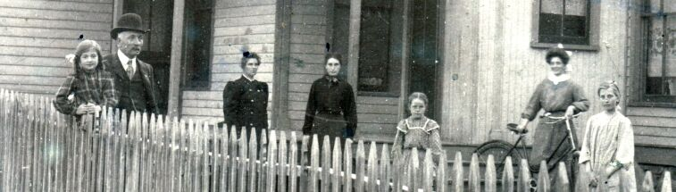
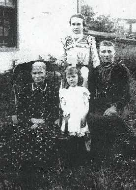

Fox
- Mitchell - Leffingwell
Maud Fern Fox,
daughter of George Washington and
Clara
Jane (Mitchell) Fox, born in Valparaiso, Saunders, Nebraska, 26
May 1891; died in Orange, Texas, 8 February 1991; buried in Blackfoot,
Bingham, Idaho. She married in Pocatello, Bannock, Idaho, 12 Jun 1913,
Norman
Elijah Bingham , son of Elijah Norman Bingham and Mary
Frances (Fife) Bingham, born in Ogden, Weber, Utah, 28 June 1892;
died in Blackfoot, 18 May 1974; buried in Blackfoot, 22 May 1974.
George Washington
Fox,
son of Anthony Wayne and Julia
M. (Leffingwell) Fox, born in Albia, Monroe County, Iowa, 23 November
1857; died in Oakland, Alameda, California, 25 January 1935. He married
in Ashland, Saunders, Nebraska (at the residence of C. W. Kincely), 15
July 1883, Clara Jane Mitchell, daughter of George
and Elizabeth Ann Vernon (Little) Mitchell, born in Eden Township,
La Salle, Illinois, 30 June 1864; died in Oakland, 24 May 1955 .
Shown in the 1880 census as living in Clear
Creek, Saunders, Nebraska; 24 years old; mother and father born in Ohio.
A farm hand for the Frederick family. His relationship to the head of the
family (Frederick) was noted as "brother-in-law" (George's sister Alzina
married Albert Wesley Frederick in 1869)
From the autobiography of his daughter,
Ethel Elizabeth Rupp: "Dad was seven years older than mother when they
were married ... so he had had time to study and work at trying to qualify
for a teacher's position. I think he went for a while to some college in
Ames, Iowa, but I wouldn't be sure. When he taught 9th and 10th grades
in Springfield, he'd study ahead of his students. He had a lot of books
and got a lot of his knowledge for himself. His brothers were a little
jealous, I guess, because they always threw it up to him that they had
more money than he, even if he was the most educated." For other
details of G.W.'s life see the biography of his wife, Clara
Jane, below.
We find [thanks to Linda Hedlund] the following
notices from The Independent [Wahoo, Saunders County]:
[May 17, 1883, p. 3, col 3] "Prof.
G. W. Fox is teaching the school at Clear Creek this summer, with his usual
success. Mr. Fox is a very pleasant gentleman, has had good success
as a teacher, and we are pleased to note his laudable ambition in his chosen
work."
[6 March 1884, page 3, column 5]: "Our
genial friend, G. W. Fox, of Clear Creek, sends us some fine specimens
of his penmanship. He is coming to Weston soon to teach a class in
this art. Remembering that Mr. Fox ranks well with the best pen men
of the state, our town will surely give him due patronage."
[28 August 1884, page 3, column 4]: "A
brand new 10 lb. boy down at the residence of G. W. Fox, in Yutan.
He is a chip of the old block. Prof. G. W. says he will make things
lively for the schoolmarms in a few years and be a pedogogue himself as
soon as he is old enough. THE INDEPENDENT extends most hearty good
wishes and congratulations to the happy parents.
[8 January 1885, page 3, column 4] "G.
W. Fox is said to have killed the last rabbit in 1884. He killed
it at 11 p.m. Dec. 31st. It is a wonder it had not been a chicken,
as Foxes are
generally more fond of chickens than rabbits."

Children of George Washington FOX and Clara
Jane MITCHELL:
 Harry
James Fox , born in Yutan, Saunders, Nebraska, 18 August 1884;
died in Oakland, 10 November 1947. Married Mabel Wiedeman. Record of registration
for the draft, WWI, says he was born 19 August 1884 and was then living
in Bannock County, Idaho. At the time of his wedding (date unknown), he
was Deputy County Clerk in Pocatello; married by Rev. Arthur Saunders of
the Episcopal Church; "Mrs. E. N. Bingham of Blackfoot officiated at the
Piano." (Pocatello Tribune, 25 October).
Harry
James Fox , born in Yutan, Saunders, Nebraska, 18 August 1884;
died in Oakland, 10 November 1947. Married Mabel Wiedeman. Record of registration
for the draft, WWI, says he was born 19 August 1884 and was then living
in Bannock County, Idaho. At the time of his wedding (date unknown), he
was Deputy County Clerk in Pocatello; married by Rev. Arthur Saunders of
the Episcopal Church; "Mrs. E. N. Bingham of Blackfoot officiated at the
Piano." (Pocatello Tribune, 25 October).
Charles
Wallace Fox, born in Yutan, Saunders, Nebraska, 21 September
1886; died 22 December 1887.
Ethel
Elizabeth Fox, born in Iliff (near Sterling), Logan, Colorado,
7 December 1888 ; died in Ellensburg, Washington, 22 April 1982; buried
in Tacoma, Washington. Married Linial Rupp, 1 September 1914.
Maud
Fern Fox married Norman Elijah Bingham.
Vera
Lucille Fox born in Springfield, Sarpy, Nebraska, 11 June 1894;
died in Reno, Nevada, 23 November 1964; buried in Burley, Cassia, Idaho.
Married James Clarence Gibbs, 11 December 1915.
Esther
Luella Fox, born in Millard, Douglas, Nebraska, 16 August 1898;
died 18 December 1970. Married Emmett O. Smith, 4 Apr 1919. Cremated.
Ruth
Margaret Fox, born in Boulder, Jefferson, Montana, 1 September
1906; died 15 March 1993. Married Carl C. Hoover, 18 September 1925. Carl
died 11 January 1991. Both he and Ruth were cremated.
Anthony Wayne Fox,
born in Ohio (probably Cuyahoga County), 20 April 1828, probably the son
of Aaron and Susan (Alberd) Fox; died in Genoa, Nance, Nebraska,
5 April 1901; married in Cuyahoga, 27 August 1850, Julia Marietta
Leffingwell, daughter of Daniel and Angelina (Chase)
Leffingwell, born in Ohio (probably in Cuyahoga), 23 June 1834; died
of consumption in Memphis, Saunders, Nebraska, in the home of her daughter,
Alzina, 23 March 1902; buried beside her husband in Genoa.
Anthony's funeral was in the Methodist
church. He was buried in Valley View Cemetery, Genoa, in a section
on the southern side of the main gate, 10th row. An unpublished list
of old graves in the cemetery shows the burial, in addition to Anthony,
of Thomas Fox (probably Anthony's son), Mrs. Fox (probably Anthony's wife),
and Harry A. Fox (unidentified: b. born in Colfax County, Nebraska, died
30 October 1912, 26 yr. 5 mo.) [This information courtesy Gary
Zaruba].
Anthony is said to have been named for
General "Mad" Anthony Wayne, 1745-1796. In addition to his exploits in
the Revolution, General Wayne commanded government forces in Ohio, 1792-1796,
during the war against the "Alliance." The 1850 Census for Ohio shows Anthony
Fox, stone cutter, in Olmstead, Cuyahoga, (Census, page 205), living with
his in-laws. Anthony was also counted in 1850 as living with his
sister, Wealthy, in Lorraine County, Ohio.
Gary posits the possibility (by correspondence
in December 2002) that Anthony and Julia left Ohio about 1855, together
Anthony's sister, Wealthy, and her husband, George Cousins, and settled
near Peoria, Illinois, where Wealthy gave birth to one of her sons (1856).
The two couples stayed in this location briefly, then removed to Monroe
County, Iowa, where there were other Cousins. Then, in or about
1859 Anthony and his family joined his brother William in Illinois.
The 1870 US Census for Stephenson, shows
[in June 1870]:
-
Anthony Fox, 42, born in Ohio
-
Julia M., 36, born in Ohio
-
Francis M., 19, born in Ohio
-
Alzina O., 17, born in Ohio
-
Aaron, 15, born in Illinois
-
George W., 13, born in Iowa
-
Sarah Jane, 11, born in Illinois
-
Harriet C., 9, same
-
Albert R., 7, same
-
John E., 5, same
-
Mary Ann J., 3, same
-
Alada Alice, 1, same
-
Thomas J., NB, same
Anthony and his family were also recorded
in the 1870 Census for Jo Daviess County [September 1870].
In 1880 Anthony and Julia were still living
in Jo Daviess County, where the US Census for Berryman shows:
-
Anthony Fox, 52, Ohio/NY/Scotland
-
Julia, 45, Ohio/NY/
-
Albert R., 17, Illinois/Ohio/Ohio
-
John E., 15, same
-
Mary A., 13, same
-
Alice A., 11, same
-
Thomas J., 9, same
-
Martha C., 5, same
-
Phebe R., 2, same
In 1885, the Fox family lived in the Clear
Creek precinct, Saunders County, Nebraska, where Anthony owned a farm,
valued at $2,000; tilled 40 acres; had farm implements valued at $90, and
livestock (horses) valued at $500. At that time, the family consisted of:
-
Anthony Fox, 57, b. Ohio; mother and father
born Ohio
-
Julia, 51, same
-
Edward, 20, b. Illinois
-
Alice, 16, same
-
Thomas, 14, same
-
Martha, 9, same
-
Phoebe, 7, same
We find Anthony and Julia again in the 1900
census for Nance County, Nebraska, with only one child, Thomas, 29, who,
it is duly noted, was "unable to read or write." According to this report,
Anthony was an unemployed farmer; he and Julia had been married forty-eight
years, they owned their house (with no mortgage), and had had 13 children,
10 of whom were still living.
The Anthony Fox family bible records the
birth of Anthony and his wife, Julia, and thirteen children. Additionally,
it records the following deaths:
-
Moses Francis Fox, April 26, 1853
-
Daniel Leffingwell, January 27, 187[9]
-
Susan Fox, May 185[9]
-
Aaron W. Fox, August 10, 1883
-
Alice Moody, July 7, 188-.
-
Albert R. Fox, March 9, 1931
-
George W. Fox, Jan. 25, 193-.
The "Moses Francis" who died in 1853 (per
Anthony Fox's Bible) may have been an uncle (or, less likely, a cousin);
Susan Fox may have been Anthony's mother. The orthography of the last digit
of her death year is identical to that of Daniel Leffingwell, but difficult
to decipher -- looks like a "0," but is probably a "9."

Until Summer 2000, we had no knowledge
of Anthony's origins, other than somewhat conflicting census data that
indicated the birth of his parent in New York or Ohio, and the suggestion
(also in census data) that his grandparents were from Scotland.
In 1999, we received correspondence from
Robin Bowman (a contract genealogist) and, in early 2000, from Gary Zaruba,
suggesting the possibility (based on geographic proximity over time) of
a relationship between Anthony and William Mark Fox.
Robin discovered William Mark Fox in Middleburgh,
Cuyahoga County, Ohio, in the 1850 census with a wife (Ursula Wood), whom
he had married 17 July 1849, and his first child, Norman Lewis Fox; then,
in the censuses of 1860 and 1870, according to Robin, William Mark was
with his family in Jo Daviess County, where we find Anthony in the 1880
census.
Gary tells us that there was a William
Fox in the Pleasant census district, Jo Daviess County, in 1850; but this
would appear not to be the William M. Fox that Robin and I find that year
in Middleburgh, Ohio. Gary goes on to say that he found William M. Fox
in Jo Daviess County (Thompson Township) in the 1860 census and Anthony
Fox in the same county (in Berryman Township) in the 1870 census [however,
though Mary Ann Legris, our cousin, found Anthony in Berryman, Jo Daviess
County, in the 1880 census, she found him in Stephenson County in
the 1870 census]. Gary thinks his ancestor, Myron Fox, who was born in
April 1854 in Jo Daviess County, was the son of William Mark Fox. Myron
married Sophia E. W. Spierling in Mount Carroll, Caroll County, Illinois
on 8 February 1873. By 1880, William Mark Fox had removed to Jackson County,
Iowa (across the river), but Myron is found in 1885 in Clear Creek precinct,
Saunders County, Nebraska, where we also find Anthony. By 1890, Anthony
had removed to Genoa, Nance County, Nebraska (Nebraska Gazette),
where we find him in the census of 1900. By then, Myron had also removed
to Nance County (near Belgrade). There was also a Leffingwell family
in Nance County (Genoa Township) in 1900: Ch[arles], a day laborer, born
January 1869 in Ohio (mother born in England); his wife Emma, born July
1875 in Sweden; and two children, Henry (age three) and Frank (age one).
The registry of marriages for Nance County shows that Charles D. Leffingwell,
28, born in Ohio, son of Julius and Mary (Lock) Leffingwell, married Emma
V. Johnson in Fullerton, 12 October 1896. Charles D. Leffingwell
appears to have been Julia's nephew.
There was also a Lydia Fox, who married
John Owen in Freeport, Stephenson County, Illinois in 1842; lived in Stephenson
County, Illinois (where the Anthony Fox family was) until 1870; and eventually
wound up in Saunders County, Nebraska, where we find the Anthony Fox family
in 1885.
Perhaps geography is merely coincidental.
On the other hand, we have definitive proof that the families of three
Foxes in question -- William, Lydia, and Anthony -- had familial "knowledge."
For example: Frank Curitan Owen, a son of Lydia (Fox) Owen, married Sarah
Ann Mitchell, daughter of George and Elizabeth Ann Vernon (Little) Mitchell,
whose daughter, Clara Jane Mitchell, married George W. Fox, son of Anthony.
Then, a few years later, after the death of his first wife, Anthony's son,
Albert R. Fox, married Belle E. (Rupe) Fox, widow of William M. Fox's son,
Lovel.
In June 2000, Gary Zaruba sent us correspondence
containing an "updated" version of a document that he believed to have
been written in the 1950's, then given to Agnes Fox McFarlin (a grand-daughter
of Myron Fox), who added names and dates during the 1960's and 1970's.
Agnes's daughter-in-law retyped the document in the 1990's to "correct
and clarify some of the data." In turn, Gary added pieces to incorporate
conclusions he had reached as a result of information we (Richard Bingham,
Mary Ann Legris, and Joyce Silva) and Robin Bowman had supplied.
Unfortunately, the formatting that showed the contributions of various
parties disappeared in the e-mail transmission. However, the opening
lines (whether verbatim from the original document or the result of Gary's
interpretation is unknown) state:
The family of Fox was separated
when the parents died, their home burned with all records and the children
were very small. Only known children were William, Liddy (Lydia) and Anthony.
Subsequently, on 22 June 2000, Gary sent us
the following snippet, unchanged, from the same document, which he thinks
was composed by Mildred Skinner (deceased), Myron's grand-daughter:
Anthony Fox, brother to William
and Liddy Fox married. They had 13 children Among them a daughter
Phoebe Ruth who married Pete Kitner. The[ir] one son was Willie Kitner
and their daughter married Anthony Smith, a brother of Mrs. Will Ward of
Big Springs, Nebr. Myrtle Fox married --- Walker; there was also
Bert, Ed, Aaron, Tommy, Elsign, Alice, Mary, Pete And Geo. Fox, all cousins
of Myron Fox. Anthony Fox was born in Cleveland Ohio. Died March
1901 age 75 yrs. at Genoa Nebr.
So, then, there seems to be no doubt that
Anthony had at least one sister, Lydia, and at least one brother, William
Mark. The remaining question: who were their parents.
Among the deaths of record in Anthony's
bible were Moses Francis Fox (1853) and Susan Fox (1859). Since these
individuals appear not to have been Anthony's children, we had every reason
to believe that they were (or may have been) his parents. The only
other vital stats recorded in this Bible are those of Anthony's children
and his wife's parents.
On the other hand...
There is a persistent tradition (among
descendants of Lydia and William) that the parents of the three siblings
both died when their children were very young.
According to Gary (reporting the conclusion
of the aforementioned Robin Bowman):
The parents are believed to be
Aaron Fox, born abt. 1803 in Vermont. He married Susan Alberd (or Albert),
born abt. 1805 in New York. Bowman obtained this information from
William’s second marriage in Jackson County, Iowa. [She] checked
on the Aaron Fox listings in 1850 for New York and none had Susan listed
as a spouse. There were two Aarons listed in [the] 1850 Ohio census,
but neither in Cuyahoga county. There was a Susan Fox,living with a group
of people in Cleveland, 1st ward, Cuyahoga County, in 1850. The census
listed Susan as blind. There seemed to be no relationship of several others
living there, all with different surnames except for one family.
Bowman goes on to state that she could not verify that this is the right
Susan Fox, but thought it should be noted since Susan might have been living
in some type of care home.
A closer examination of this census record
shows that Susan Fox, age 45 and blind, was living in the home of Seth
W. Abbey and his family (several children and his 81 year-old father).
Other tenants consisted of John Ingersoll and his wife and Laura Benedict
and her two daughters. Ingersoll's occupation was "merchant."
Benedict had an estate valued at $2,000.
If Anthony's parents died while he was
an infant, we have then to determine who were the Moses Francis Fox and
the Susan Fox he (or more likely his wife) named in his Bible. However,
the fact that Anthony named his first son "Aaron" seems to support Bowman's
conclusion.
In Summer 2001, Kathie Harrison gave us
the following biography of Lydia Fox, written by Lydia's daughter, Josie
Owen Harrison:
Lydia Ellen Fox was born in Cleveland,
Ohio on June 11, 1825. She had four sisters, Alzina Beebee, Adeline, Wealthy
and Mary. (Alzina's married name must have been Beebee); Wealthy married
a man by the name of Cousins; Adeline died apparently when very young,
and my mother cannot remember the name of Mary's husband. She had three
brothers -- Louis Fox, who was drowned at the age of 16, in Ohio. William
Fox, who lived the latter part of his life in Iowa, and who died in 1909
at the age of 93. Anthony Fox, who lived to be past 70 years of age and
who passed away at Genoa, Nebraska.
Her father's name was Aaron Fox, who died
rather young, leaving a wife and eight children, all small; three of the
youngest being given to families to raise. My Mother being given at the
age of nine, to this family "Cal Giddons", after which they came from Ohio
to Freeport, Illinois. This is the man my father came to work for and stayed
for three years. Our family was seven boys and five girls. They lost one
boy and raised eleven children to adulthood.
My Mother [i.e., Lydia (Fox) Owen] passed
away March 29, 1909, at the age of 84 years, 5 months, 6 days. She lived
3 months, 12 days, of a longer life than my Father. They were married nearly
62 years. They are both laid to rest in the Ashland, Nebraska, cemetery
Though Dr. Zaruba tells us that Lydia's account
has some inaccuracies -- as if genealogies were not replete with error
-- it does seem to confirm at least one of the "family traditions."
We might assume that the "Susan Fox" in the Anthony family Bible was Anthony's
mother, but, then are left to wonder about "Moses." The most likely
conclusion (barring evidence to the contrary) is that Moses was Aaron's
brother (hence, Anthony's uncle), who may have taken on Anthony and, perhaps,
other Fox children when Aaron died, leaving a blind widow incapable of
raising her young children alone.
On the business of family tradition:
Joyce (Ruth, George, Anthony) and Mary Ann (Nellie, John Edward, Anthony)
both independently spoke to me of Anthony's "Indian heritage" -- first
I had heard of it. Said Mary Ann: "Whenever Nell mentioned the Indian
connection she referred to Anthony as being a half-breed whose Mother was
a full-blood which made J. Ed a quarter and eligible for hunting and fishing
privileges on the reservation. J. Ed was a great fisherman -- many
of his catches were mounted and hung in the Pocatello Sporting Goods Store.
... J. Ed always hunted and fished on the Fort Hall Reservation."
Notice of Anthony Fox's death appeared
in the Ashland Gaxette, April 12, 1901 (p. 5, col. 4)
"Anthony Fox, an old time resident of Saunders County, died at his home
at Genoa, Nance County, on Saturday last. Mr Fox moved to Nance County
from near Ashland about 12 years ago. He was well advanced in years. He
was the father of Mesdames J. Hayen and W. F. Clark of Clear Creek precinct
and of Prof. G. W. Fox of Benson, Nebraska."
Notice of Julia (Leffingwell) Fox's death
appeared in the Saunders County Journal, March 27, 1902
(p. 5. col. 4)
"Grandma Fox died Sunday morning at the home of her daughter, Mrs. G. Havrin,
in Clear Creek precinct, aged 70 years, 10 months. Funeral at U. B. Church
Monday and the remains were shipped to Genoa, for interment."
We have two obituaries for Julia:
From the Ashland Gazette, 28 March
1902:
"Mrs. Julia Marietta Fox died on March 23 of consumption at the home of
her dauther, Mrs. Hayen, seven miles north of Ashland. Mrs. Fox's
maiden name was Leffingwell. She was born near Cleveland, Ohio, June
23, 1832. She was married to Anthony Fox August 27, 1847, in
Ohio where she lived a few years, then moved to Illinois, residing there
until about nineteen years ago, when they moved to Nebraska. Thirteen
children were born to them, seven girls and six boys, three of whom, Alice,
Aaron, and Frank preceded her to the spirit land. Mr. Fox died April
6, 1901.
"Mrs.
Fox was a good and kind woman, a loving mother and a good Christian, having
been a member of the Methodist Church for fifteen years. Her merits
were best known to the members of her own household, where her untiring
energy and devoted care make her loss deeply felt. She was always
of a cheerful disposition and made many frients.
"The
funeral was held at the United Brethren Church in Memphis on Monday, the
Rev. J. W. Lewis conducting the services. Her remains were sent to
Genoa, Nance County, to be buried by the side of her husband.
"The
remaining children of Mrs. Fox are: Mrs. Alzina Hayen, Memphis, Mrs. Mary
Clark, Ashland, Geroge Fox, Benson (Omaha), Albert Fox, Valparaiso, Mrs.
Harriet Harrington, David City, Edward Fox, Columbus, Mrs. Martha Anderson,
New Albany, Kansas, Mrs. Ruth Kitner, Genoa, Mrs. Jane Campbell, Monroe,
Thomas Fox, Lincoln."
From the Genoa Leader Times, 28 March
1902
"Mrs. Julia Fox, widow of the late Anthony Fox, died at her home of her
daughter, Mrs Haynes, near Memphis in Saunders county, this state, last
Sunday morning at nine o'clock.
"Funeral
services were held at the Methodist church in Memphis Monday afternoon
and the remains brought to Genoa Tuesday and buried by the side of her
husband who died one year ago.
"Mrs.
Fox was born in Ohio 70 years ago where she married and where some of her
children were born. Thirteen years ago Mr. and Mrs. Fox came to Nance county
and settled on a farm near Genoa. Later on they moved to town where they
resided until the death of Mr. Fox, when the deceased went to Saunders
county to reside with one of her daughters. Since the death of her husband
Mrs. Fox commenced to decline. Never in the best of health the death
of her husband hastened the end, and her case rapidly developed into quick
consumption. Many years ago deceased united with the Methodist church,
and it was her faith in Christ and the hope beyond the grave she would
meet the husband and children who preceded her, that sustained her gentle
spirit as the hour approached for the last farewell on earth to her loved
ones. She felt that the parting was only temporary; that beyond that mysterious
river, which all humanity must some day cross to a brighter shore on the
other side, there would be a joyous reunion.
"Mrs.
Fox had more than her share of worry and trouble that come to most women.
She was the mother of thirteen children- six boys and seven girls. Three
times during her life she has stood at the bier of loved ones suddenly
cut off in the hour of health by accident. The first to precede her
was her first born - Frank - who was drowned in Ohio. The next to follow
was John [i.e., Aaron] who was killed by a B. & M. train while
crossing the track at Ashland this state. The next victim was Alice, one
of seven daughters, who was accidently shot in Custer county.
"All
the children, with the exception of a daughter living in Missouri, were
present at the funeral. They were:
"G.W. Fox residing
at Benson, this state,
"Albert of Valparaiso,
"Edward of Columbus,
"Mrs. S. J. Campbell of
Monroe,
"Mrs. Mary Clark of Ashland,
"Mrs. R.T. Herrington of
David City,
"Mrs. Haynes of Memphis,
"Mrs. Peter Kitner of Genoa
Curiously, neither of the foregoing obituaries
mentions daughter Myrtle Frances (Walker) of New Raymer, Colorado.
The second obit notes the death of "her first born - Frank - who was drowned
in Ohio." Mary Ann Legris has posited the possibility that this "Frank"
is the Moses Francis whose death (in 1853) is recorded in Julia's Bible.
On the other hand, Julia's first born after marriage to Anthony was Frances
Myrtle, who was still alive, in New Raymer, in the 1930's. Note,
if you will, that Frances Myrtle was born (8 April 1851) just 8 months,
11 days after the marriage of her parents (27 August 1850).
Children of Julia M. LEFFINGWELL
and Anthony Wayne FOX:
Frances
Myrtle Fox, born in Cuyahoga, 8 April 1851, married a Walker,
24 December 1899, and relocated (eventually) to New Raymer, Weld, Colorado,
where she was living in 1931.
Alzina
O. Fox, born in Cuyahoga, 6 December 1853; married Albert Wesley
Frederick in Carroll County, Illinois, 19 December 1869 [Vol. B., page
17]. Subsequently married G. Hayen (Hayes, or Havrin), with whom
we find her living in 1902 in Memphis, Saunders, Nebraska.
Aaron
W. Fox , born in Illinois, 27 March 1855; died in Nebraska 10
August 1883. He married Mary E. Mitchell, Clara
Jane Mitchell's older sister, at the home of their father, George Mitchell,
22 October 1881. Shown in the 1880 census as living in Clear Creek, Saunders,
Nebraska: 25 years old, mother and father born in Ohio; a farmhand for
the Wood family. Mary E. was commonly known as "Nellie." Her middle
name may have been Eleanor or Ellen. Mary Ann Legris, granddaughter of
Edward J. Fox, tells the following story, told to her by her mother: "Aaron
and another man loaded a wagon with hay and headed out to deliver it. Nellie
and the baby (less than one month old) stayed with Clara Jane. As the wagon
drove away Clara turned to find Nellie crying. Clara told her not to be
a silly goose as Aaron was only going to be gone a day. Nellie cried harder
and said she would never see him again. The wagon was hit by the train
and Aaron was killed outright" (10 August 1883). An account of the
accident follows:
The Independent, Wahoo, Nebraska,
Thursday, August 23, 1883, Page 3, col. 5
A TERRIBLE FATE!
Aaron Fox Run Over by
the Cars and Instantly Killed
From the Ashland Gazette
This town was thrown into excitement last Friday morning by the report
that a man had been run over and killed by the cars at the depot crossing.
Soon large crowds went to the scene and found the report too true.
About one hundred yards south of the depot, and a short distance from the
water tank was the dead and mangled body of Aaron Fox. On the opposite
side of the track was the running gear of the wagon almost broken into
splinters, while near the crossing was the bed of the wagon. The
track for some distance was strewn with the blood of the victim.
Upon investigation it was found that the head had been crushed out of ____
semblance and nothing of it remained but the scalp. A part of the
skull containing an eye and the upper jaw bone were found beside the track,
while the splintered rails bore evidence that the body had been dragged
over them as pieces of his clothing were fastened to the splinters.
It was a sickening sight and will not soon be forgotten by those who saw
the disfigured body. From an eye witness of the sad affair, it seems
that a special train bearing an excursion party of KnightsTemplar en route
for San Francisco to attend the conclave in that city, came thundering
down past the depot at a high rate of speed and as the engineer failed
to ring the bell the rapid approach of the train was not noticed by the
deceased. Fox, it appears, was standing up in his wagon, unconscious
of his impending death and was even warned by Max Swerdberger that the
train was coming but he did not hear the the warning and drove onto the
track. The pilot of the engine caught the wagon, but the horses managed
to break loose and escaped unhurt. The body was removed to town and
the coroner sent for who did not arrive until Saturday, when the inquest
was held. They returned a verdict that the deceased came to his death
by being struck by the locomotive while the same was running at an unusual
rate of speed while passing the depot. The deceased was nearly 30
years of age and was well known in Ashland and vicinity. He leaves
a wife and a child a few weeks old who have the sympathy of this entire
community. The Lincoln Journal says: After leaving Ashland
Mr. Scott, one of the excursionists, passed through the train and collected
$120 for the widow of the dead man and on arrival at Lincoln handed it
to superintendent Thompson, to forward to the widow with the following
note:
“One hundred and twenty dollars, collection taken up for benefit of family
of man killed by Knights Templar excursion train at Ashland. New
York state battalion, commanded by Michigan state battalion, commanded
by J. E. Sexton, grand commander. Big hearted John Scott, collector.
J. E. Sexton, Detroit, Michigan, Charles Bartlett, Elmira, N. Y.”
These people wished their sympathy conveyed to the bereaved ones, but all
who saw the accident state that no one was to blame but the man himself.
We are sure that the widow of Mr. Fox will fully appreciate this expression
of sympathy of the Knights Templar from the east, and will always think
kindly of “big hearted John Scott.”
A Card
To those who interested themselves in caring for the remains of my late
husband, Aaron Fox, I wish to express my sincere thanks. May the
“giver of all good” shield and protect you and yours from a similar fate,
is the devout wish of
Mary E. Fox
The following from the
Wahoo, Nebraska, Independent [ Courtesy Gary Zaruba]:
NOTICE OF APPOINTMENT OF ADMINISTOR
In County
Court in and for Saunders County, Nebraska before H. Gilkeson, County Judge.
In the
matter of the estate of Aaron Fox, deceased.
Mary
E. Fox, widow of said deceased, files petition in county court, setting
forth that said Aaron Fox, died August 10th, 1883, and that he was immediately
preceding his decease a resident of said county aforesaid and left personal
property to the value of $100.00 and a widow and one minor child, about
eight months old, and prays that George W. Fox, be appointed administrator
of said estate.
It is
therefore ordered and adjudged that the 22d day of September, 1883, at
11 o'clock a,m. at
my office in Wahoo, be set
as the as the time and place for hearing said matter and that all persons
interested may appear at said time and place and show cause why said prayer
be not granted. It is far-
ther ordered that notice
of hearing be published in the Wahoo Independent, for three con-
secutive weeks, prior to
said time of hearing given under my hand and seal this 5th day of September,
1883.
H. GILKESON, County Judge.
George
Washington Fox married Clara Jane Mitchell.
Sarah
Jane Fox , born in Albia, Monroe County, Iowa, or in Stephenson
County, Illinois, 4 August 1859. Sarah Jane Fox filed application
to marry Michael Campbell in Caroll County, Illinois, 10 Apr 1876.
Michael, according to his gravestone, was born 25 January 1853. According
to Sarah Jane's obituary (as reported by Gary Zaruba, 2 December 2002),
she was born in Albia, Monroe County, Iowa, in 1856. Children:
Polly (1877), married a Stevens; Laura Belle (1879), married a Guiles;
Lillie (1881), married a Beckwith; Mabel (1885), married a Larson; Frank
(1889).
In 1880, Sarah and her family were living
in Jefferson Township, Jefferson County, Illinois. In Fall 1883,
they moved to Ashland, Nebraska, and resided that winter with Anthony and
Julia. The following spring they moved to a farm about three miles
northwest of Monroe, Nebraska. The following year, Spring 1885, they
removed to a farm about ten miles north of Genoa, where they resided about
six years. In 1890/1891, the family resided in Woodville Township,
Platte County, Nebraska. Ten years later, in 1900, Sarah and Michael
lived in Lost Creek, Platte County, with Lillie, Mabel, and Frank, the
two oldest chidlren having left the nest. Sarah and Michael moved
to Genoa in 1919. Michael died 14 February 1921; Sarah died 4 December
1936. Both were interred in Valley View Cemetery, Genoa, Nebraska.
Sarah's obituary was published in the Genoa
Leader Times, p.1, col. 2.
FUNERAL RITES HELD
FOR SARAH J. CAMPBELL
"Sarah Jane Fox was born in Albia, Monroe County, Iowa on August 4, 1856
and died at her home in Genoa, Nebraska December 4, 1936 at the age of
80 years and four months.
"When but six months old her parents moved to Illinois where she grew to
womanhood and on April 10, 1875 was married to Michael Campbell to which
union were born four daughters and one son. In the fall of 1883 they moved
to Nebraska spending the winter in Ashland where her parents then lived
and the next spring they moved to a farm about three miles northwest of
Monroe, Nebraska. They lived there one year and then moved to a farm in
Platte County ten miles north of Genoa where they lived for a period of
six years and about 17 years ago moved to Genoa where she lived until called
to the heavenly home. She and her husband joined the United Brethren Church
in a school house at West Hill about 48 years ago, but later attended the
Methodist Church in Genoa, where they placed their membership in January1916
and remained faithful members until called to the Church triumphant. She
had loved church and there on the Sunday preceding her death she had attended
the church services twice.
"Her husband having preceded her in death, Feburary 15, 1921, she leaves
to mourn her departure
her son Frank of Omaha,
Nebraska; her four daughters Mrs. Etta Stevens of Lincoln, Mrs. Laura Guiles
of Oregon City, Oregon, Mrs. Lillie Beckwith of Nampa, Idaho, Mrs. Mabel
Larson of Genoa, Nebraska; two sisters, Mrs. Myrtle Walker of New Raymer,
Colorado, Mrs Ruth Kitner of Genoa; and 18 grand children and 20 great
grandchildren and other relatives and friends.
"Two of her daughters, Mrs. Stevens and Mrs. Larson and her sister Mrs.
Ruth Kitner were with her at time of death, her daughter, Mrs. Beckwith
of Idaho, arrived shortly after her death.
"Funeral services were conducted by the Rev. O. W. Strombom at the Methodist
Church Monday and she was laid to rest beside the grave of her husband
in Valley View Cemetery.
"Relatives from out of town who attended the funeral were as follows: Lee
Campbell of Fort Dodge, Iowa, Mike Campbell of Knerim, Iowa, Ed Campbell
of Iowa Falls, Iowa, Frank Campbell of Omaha, Nebraska, Mr. and Mrs. Mike
Stevens, Mrs Curtis Murphy and Darlene of Lincoln, Nebraska, Mr. and Mrs.
Ollie Fox of Valparaiso.
Harriet
Cordelia Fox , born in Illinois, 23 November 1861; married Ransom
Herrington in Caroll County, Illinois, 27 December 1879. In 1902,
Harriet and Ransom lived in David City, Butler, Nebraska; in 1931, they
lived in Los Angeles, California. Ranson P. "Harrington" and
his family appear in the 1900 federal census for Butler County, Nebraska,
as follows (E.D. 5, Sheet 1, line 5, courtesy Gary Zaruba):
Ha[e]rrington, Ranson[m] P. age
41, born July 1858 in Illinois, father born in Indiana, mother b. Nebraska
wife, Harriet C.
age 39, born November 1860 in Illinois, both parents born in Ohio
son, Ranson[m] B[lain],
age 13, born Nebraska
Harriet had had three children, two were
still living.
Harriet & Ranson had been married
21 years.
Ranson[m]'s occupation: farmer
Ransom Blain died in Los Angeles 21 December
1958.
Albert
Richard Fox , born in Freeport, Stephenson, Illinois, 28 August
1863; died in Lincoln, Lancaster, Nebraska, 9 March 1931. Married Clarinda
Towers LaRue, 25 April 1883, in South Bend, Nebraska. 1885 census for Oak
Creek precinct, Saunders, Nebraska: Albert, 22, born Illinois; Clarinda
[LaRue], 22, born Iowa; Earl, 1, born Nebraska. Albert and Clarinda
were living in Valparaiso, Saunders, Nebraska in 1902; Clarinda died in
Valparaiso, 19 May 1925, and was buried in the Valparaiso Cemetery. Albert
(Bert) married a second time, toward the end of February 1926, Belle
Emeretta Rupe, widow of Lovel R. Fox. This marriage ended shortly
in separation. Lovel Fox, died 1920, buried in Albion, Boone, Nebraska,
was son of Anthony's brother, William M. Fox.
Obituary, Albert R. Fox After
Short Illness: Albert Richard Fox was born August 23, 1862 at Freeport,
Illinois, and passed away at Lincoln, Nebraska, at the Bryan Memorial Hospital
on March 9, 1931. He moved with his parents, when a young man on
a farm near Memphis, Nebraska. On April 25, 1883 he was united in
marriage to Clarinda LaRue and to this union was born four sons and one
daughter: Earl W. Fox of Ashland, Oliver A Fox and Ross R. Fox of
Valparaiso and H. B. Fox of Scottsbluff and Pearl Edith Fox who passed
beyond at the age of six years. He leaves to mourn his loss, besides
his children and eight grandchildren, two brothers Ed Fox and George Fox
of Pocatello, Idaho, and four sisters Myrtle Walker of New Raymer, Colorado,
Dill Herrington of Los Angeles, California, Jane Campbell and Ruth Kitner
of Genoa, Nebraska. His mother, father, three sisters, two brothers
and one daughter preceded him in death. The last four years he had
made his home in Ashland, Nebraska. He was a good neighbor and a
kind father, always willing to lend a helping hand. He will be greatly
missed by his many friends and neighbors. Funeral services were held
last Wednesday afternoon from the local Christian Church with Rev. W. L.
Goodel of Minden, Nebraska in change. Burial was in the Valparaiso
Cemetery.
Edward
John Fox , born in Freeport, Stephenson, Illinois,18 August
1865; died 22 August 1935 in Pocatello, Bannock, Idaho. Married Annie Cora
LaRue, 20 November 1890. Bible record calls him "Edward J.," but descendants
call him "John Edward." The 1900 Federal Census for the City of Columbus,
Ward 3, Platte County, Nebraska (courtesy Gary Zaruba) shows:
-
Fox, Edward, age 29, August 1870, born in
Illinois, both parents born in Ohio
-
Wife, Annie C., age 27, December 1872, born
in Nebraska, father born in Ohio, mother in Indiana
-
Son, Lesley L., age 12, April 1888,
born in Nebraska; father's birthplace unknown, mother born in Nebraska
-
Son, George E., age 2, March 1898, born in
Nebraska, father born in Ohio, mother, in Nebraska.
-
Edward's occupation: Railroad Fireman
-
Edward and Annie had been married 10 yrs.
Leslie was the son of Edward's unfortunate
sister, Alice (see below). Says Mary Ann Legris (Edward's grand-daughter):
"No one has ever known who Leslie's father was - or if they knew ... it
was never made known to the rest of the family." George E. (for Eddy)
was the son of Annie Cora's sister, Lily Belle (LaRue) Kinney. According
to Mary Ann: Lily had tuberculosis and died a few weeks after Eddy
was born. George Kinney (the father) returned to Ohio and left Eddy to
be raised by my grandparents (Edward and Annie C. Fox). Eddy died
of tuberculosis about age 45 in the TB Sanitorium in Boise, Idaho.
Edward and Annie had one child while living in Columbus: Daniel Frank,
b. 26 October 1908, who died the next day. Their next child, Mary
Ann's mother, Nellie, was born in Valparaiso in 1910.
Maryann
J. Fox , born in Loran, Stephenson, Illinois, 5 July 1867; died
in Ashland, Saunders, Nebraska, 28 December 1902. Married W. Ferrell Clark.
Obituary: "Mary A. Fox was born at Loran, Illinois, July 5, 1867. She came
to Nebraska about 20 years ago and lived in this vicinity since that time.
In November 1883, she was married to William S. Smith, who died December
11, 1892. She was married to W. F[arel] Clark April 2, 1893. Her death
occurred Sunday morning at her home north of Ashland. She leaves a husband
and five children, also five sisters and four brothers. The interment was
made in the Ashland cemetery on December 29. The funeral service was conducted
by the Rev. L. A. Hussong of the Christian Church." Maryann
J. has four of her five children by her second husband -- Frankie
(a daughter), John, Theodore Farrell (born in Ashland, 21 June 1900; died
in Ogden, Utah, 14 May 1976; married Alice Virginia Swanson), and Eva.
Alice
Alada Fox , born in Stephenson County or Jo Daviess County,
Illinois 28 July 1869; died in Saunders, Nebraska, 10 July 1889 (7 July
according to Julia's Bible). Alice appears to have married an Emmit about
1887 or before, but no record of the marriage has been found, and the presumption
that it happened is based on a certificate, issued in Custer County, Nebraska,
7 October 1888, for the marriage of Joseph Moody to Alice Emmit, daugther
of A. Fox and Julia Leffingwell.
Lacking proof for the marriage to Emmit,
we might hold out for the possibility that "Emmit" in the Moody certificate
was a clerk's error for "Alada."
Story told to Mary Ann Legris, granddaughter
of J. Edward. Fox, by her mother (Nellie Fox McCaskill): Alice had a son
Leslie (14 Apr 1888) out of wedlock. She was sent to live with Mike and
[Sarah] Jane Campbell. A bit of matchmaking went on and she married the
farmer on the adjacent farm. It was thought that his name was Ewing (but
perhaps it was Moody). One morning when Alice was stoking the fire in the
cookstove she paused to see if the fire would catch and heard some choking
sounds from the baby. She darted back into the bedroom and discovered her
husband choking the baby. She still had the poker in her hand and she hit
Moody (or Ewing) over the head with it. He dropped the baby and ran. She
wrapped up the baby, got on her pony and rode to her sister's house. Leaving
the baby with Jane and, against her sister's advice to wait for the men
to return from the fields, she returned to her home to get clothing for
the baby. A young boy herding cattle into a pasture on a small rise across
the road from her farm heard a horse and saw her dismount the pony, lead
him through the gate, and turn the latch to the gate. As she turned, her
husband stepped out from the bush and shot her in the chest with a shotgun,
placed her body next to the gate and covered her chest and face with her
apron. The young boy ran back to his home and told his mother of the shooting.
She rang the dinner bell to call the men in from the fields. A posse was
formed -- Ewing's [Moody's] body was found about twilight in a shallow
pond of water (7 July 1889). Jane and Mike were not able to keep the baby
Leslie and he was sent to Anthony and Julia. She cared for him with great
difficulty because she suffered from arthritis. When Anne LaRue and J.
Ed. Fox were married, they took this child and raised him. Leslie moved
to Idaho were he worked for the O.S.L. Railroad as an engineer. He was
married and had an adopted son. He was in an automobile accident and died
the next day from a cerebral hemorrhage caused by a glass splinter from
the windshield (20 June 1929). J. Ed. took Les's wife and her child to
her family in Oelwien, Iowa, and Les was buried in Oelwien. His widow died
not long afterwards from cancer. Her family raised the child.
On 21 June 2003 we received information
from Gary (Z) and Mary Jane (L) that confirmed the substance of Nellie's
story, but amended some important details, to wit: Alice had been
sent to live, not with with her sister, Sarah Jane Campbell, but with her
sister Harriet C. and brother-in-law Ransom Herrington, who lived on a
farm/ranch about seven miles east by southeast of Westerville, Custer County,
Nebraska. A bachelor (Joel A. or Joseph M. Moody) lived near the
Herringtons; he married Alice in the Herrington home on 7 October 1888.
Joel (or Joseph) Moody murdered Alice 10 July 1889 at the home of Squire
G. D. Rose, who lived near the Herringtons. According to the Custer
County Republican, Alice and Joel separated on 6 July and Alice went to
stay with Harriet. According to Zaruba, the paper reported that the
couple had not lived together agreeably since winter, and the two parties
had agreed to meet at Squire's place, 11 July, to divide their property.
At that time, Joel (Joseph) asked Alice to remove with him to Washington
(state). When Alice refused, according to reports, Joel shot her
twice, then later shot himself. G. D. Rose's son witnessed the murder.
As to the Alice's murder, we have the following
news extracts, courtesy Dr. Zaruba:
THE OMAHA DAILY BEE (Evening
ed.)Thursday, July 11, 1889 (page 5, column 3)
Murdered His Wife
Ansley,
Neb., July 11. Joseph M. Mody, living fourteen miles northeast of this
place, shot and killed his wife about 5 o'clock yesterday afternoon. She
had left him on account of ill-treatment and went to the home of his brother,
living about five miles north-east of here. He went there yesterday and,
taking a shotgun, shot her in the breast, she dying almost instantly. He
has not yet been arrested.
THE OMAHA DAILY BEE (Morning
ed.) Friday, July 12, 1889 (page 2, column 3)
Murdered His Wife
Ansley,
Neb., July 11. Joseph M. Moody, living fourteen miles northeast of
this place, shot and killed his wife about 5 o'clock yes-terday afternoon.
She had left him on account of ill-treament and went to the home of his
brother, living about five miles north-east of here. He went there yesterday
and, taking a shotgun, shot her in the breast, she dying almost instantly.
After killing his wife Moody committed suicide by shooting himself through
the head.
THE OMAHA DAILY HERALD Friday Morning,
July 12, 1889 (front page, column 1)
Joel Mooney Murders His Divorced
Wife and Then Takes His Own Life Near Broken Bow
Joel Mooney Kills His Divorced Wife and
Cheats the Gallows
Broken
Bow, Neb., July 11.- [Special to The Herald] Joel Mooney. a farmer living
eight miles east of Ansley, killed his divorced wife at his house some
time yesterday afternoon. Her body was found last night and a search this
morning revealed the fact that Mooney had committed suicide immediately
after the murder. His body was found about 100 yards from the house.
The coroner's inquest is now in session.
THE OMAHA REPUBLICAN Friday Morning,
July 12, 1889 (front page, column 3)
Moody, the Ansley Wife Murderer, Suicides
After His Terrible Deed of Monday
A Murderer Suicides
Ansley,
Neb., July 11. -[Special]- J.M. Moody, who killed his wife yesterday, finished
up the work by killing himself. His body was found this morning in the
hills, near the place where he murdered his wife, with the top of head
blown off. He had used the same shot gun to kill himself that he used on
his wife. Jealousy is now assigned as the cause of the deed. The wife was
buried today and he will be buried to-morrow. Both parties were well connected.
THE OMAHA WEEKLY BEE July 17, 1889
Listed the deaths of Joseph M. Moody and
Mrs. Joseph M. Moody, Custer County.
Dr. Zaruba thinks the story
in the Custer County Republican (11 July 1889, "Joel Moody Murders His
Wife and Blows Out His Own Brains") more likely to be accurate in specifics
than the Omaha papers. Alice appears to have been interred in the
Kingston (Liberty) cemetery, about eight miles east by southest of Westerville
[This information from Gale Moody, Joel Moody's great-nephew, courtesy
Dr. Zaruba].
Thomas
J. Fox , born in Illinois, 27 August 1870; living in 1902 in
Lincoln, Lancaster, Nebraska; died abt. 1905.
Martha
C. Fox , born in Illinois, 3 July 1874; married --- Anderson;
living in 1902 in New Albany, Wilson, Kansas.
Phoebe
Ruth Fox , born in Illinois, 21 September 1876. Marriage, Nance
County, Nebraska: Fox, Phebe Ruth, born Illinois, married Peter J. Kitner
on January 1, 1896, at the Methodist Church in Genoa, J. W. Miller, Pastor.
Witnesses: W. A. Bussel and Ed Curry. Peter's parents were Peter and S.
E. (Mason) Kitner. Ruth and Peter were both buried in Value View
Cemetery, Genoa, Nebraska.
Aaron Fox, married Susan Albert
(or Alberd). Identification of Susan's surname provided (hypthetically)
by Bowman.
Conundrum: We have no reason to doubt the
identity of Anthony's father (Aaron), who is named in Lydia's biography
(supra), but Lydia does not give us the name of her mother.
This information has been supplied (correctly or not) by Bowman.
Lydia states that, on the death of Aaron, the three youngest children were
"given to families to raise." The three youngest would appear to
have been Lydia (1825), William (1826, unless Lydia is correct in saying
he was 93 when he died in 1909), and Anthony (1828). If the date
of Lydia's birth is correct and if she was placed with another family when
she was nine, her father, Aaron, would have died in or a bit before 1834.
According to Bowman, Aaron was born in Vermont about 1803, in which case
he would have died at or before age thirty-one. That means that he
sired Lydia when he was, maybe, twenty-two. However, if he had five
children before Lydia he would had to have begun propagating before age
seventeen. It is possible, of course, that Adeline, who "apparently
died young," and Mary both were born after Anthony, and that both died
before the death of Aaron, leaving a family of six children, in which case
Aaron could have married Susan, and begun propagating as late as, say,
1822 (i.e., at age nineteen). Susan, his wife would have been, maybe
seventeen. Whatever the case we are pushing the biological-demographic-statistical
envelope -- unless Bowman is wrong in her estimates of Aaron's and Susan's
birth dates. However, if William was born in 1816 (as Lydia's biography
suggests), and Susan (Aaron's wife) was born about 1805, as Bowman suggests,
Susan would have been just eleven or twelve years old at the time -- an
unlikely possibility. We have here, obvious problems, which (we understand)
our cousins Gary Zaruba and Mary Ann Legris are working to solve.
In the 1830 Census for Rockport, Cuyahoga
County, we find Aaron Fox in a household of nine consisting, presumably,
of himself (age 30 to 39), his wife (age 20 to 29), and seven children
-- one boy and two girls under five; one boy and one girl between five
and and nine, and one boy and one girl between ten and fourteen years of
age. Assume, for the sake of argument, that this census data is accurate,
and this Aaron is the father of our Anthony. The discrepancy
between Lydia's biography (naming eight children) and the census (which
shows seven) is easily explained: either Louis or Adeline died before
1830, or one of the daughters was born after 1830. So, then, knowing
with certainty only the birth dates of Lydia and Anthony, we can conclude
the following:
(1) Aaron Fox was born in
or before 1800
(2) His wife was born after 1800,
but probably not long after.
(3) In 1830, they had three sons:
one under five (Anthony, born 1828), one between five and ten (probably
William), and one between ten and fifteen (probably Louis).
(4) In 1830, they had four daughters:
two under five, one between five and ten (Lydia, barely five), and one
between ten and fifteen.
Thus, we would have the following birth order:
1. Louis (or a daughter)
2. A daughter (or Louis)
3. William
4. Lydia
5. A daughter (or Anthony)
6. Anthony (or a daughter)
7. A daughter
8. A daughter (born after the census)
If this birth order is correct, Lydia would
not have been one of the three youngest.
However, subsequent research, mostly conducted
by Gary Zaruba, with the assistance of Mary Ann Legris, suggests the following
birth order:
1. William (1816)
2. Alzina (1817)
3, 4, and 5. Louis, Mary, and/or
Adeline
6. Lydia (1825)
7. Anthony (1828)
8. Wealthy (1830)
The notion that Aaron's wife was Susan Albert
[or Alberd] comes to us by way of Robin Bowman. The record of deaths
in Anthony's Bible seems to confirm the "Susan" part, but fails to give
us a surname. The notion that Aaron died "early" and the family split
as a result is based on family tradition, supported (apparently) by Josie's
biography of her mother (Lydia). There is, however, another possibility
that may be worth considering. In the 1840 census for Brecksville
(Cuyahoga), Ohio, we find a record for "Mrs. A. Fox" (obviously a widow)
with the following household members -- one male, 10 to 14 (Anthony?);
two males, 15 to 19 (Louis and William?); two females, five to nine (perhaps
children seven and eight, as listed above?); one female, 10 to 14 (another
daughter?); one female, 15 to 19 (Lydia?); and one female, 40 to 49 (Aaron's
widow?). There are seven children in this list; Aaron had eight,
but remember, according to Josie/Lydia, one daughter (perhaps the first)
"died young." Also if the 1830 census data for Aaron is correct,
his widow should have been between 30 and 39 in 1840 -- but, then, census
data is not always absolutely reliable.
Children of Aaron and Susan Alberd:
William
Mark Fox, born in Cuyahoga, Ohio, about 1826 or in Herkimer, New York,
about 1816; died 1915-1917, age 89, or (according to Lydia's biography)
in 1909 at age 93. According to the record of his second marriage
to Ester Baty, Feb. 1, 1894, Jackson County, Iowa, Book I, page 200 (1880-1896),
William he was born not in Frankfort, Herkimer, New York, about 1816. He
married Ursula Wood in Cuyahoga, 7 July 1849. Ursula died 17 November
1893, age 62 years, four months, eighteen days; William married Esther
Baty, February 1894, in Baldwin, Jackson, Iowa. William and his family
appear in Middleburgh, Cuyahoga, in the 1850 census; in Berryman, Jo Daviess
County, Illinois, in the 1860 and 1870 censuses; and in Monmouth, Jackson,
Iowa, in the 1880 census. William served twice as a soldier: in the
Mexican War (1846-1848) and again in the Civil War (1861-1864). By
Ursula, he had twelve children: (1) Norman Lewis Fox, b. 1850 in
Cuyahoga, died 10 February 1943; buried in Albion, Nebraska; married
in Illinois Mary Jane Frederick. (2) Lucy Ann Fox, born 1 August
1852 in either Ohio or Illinois; died in Anamosa, Jones, Iowa, 30 December
1926; married Samuel Woodward, 29 January 1872, in Madison, Jones, Iowa;
married (2) Franklin Brutsman in Madison, 22 December 1883; married (3)
Joseph Yarington in Iowa, abt 1893. (3) Myron Junior Fox, b. in Berryman,
12 April 1854; died in Belgrade, Nance, Nebraska, 17 January 1927; married
Sophia Elisa Wilhemina (Elizabeth) Spierling, 8 February 1873, in Mt. Carroll,
Carroll, Illinois; Elizabeth died 6 April 1936. (4) Franklin Aaron
Fox, born in Berryman, 1856; died 1918; married with three children.
(5) Liddy (Allen) Ellen Fox, born in Berryman, 7 January 1858; died
27 July 1939; married Al Dixon in Illinois; five children. (6) William
Elijah Fox, born in Berryman, 1 January 1860; married and had four children,
but was living with his sister Lucy and her family in Madison, 1880. (7)
Charles Edward Fox, born in Berryman, Jo Daviess, Illinois, 20 January
1862. (8) Emma Jane Fox, born in Berryman, 22 April 1866; married
(---) Jones and had five children, one of whom (Leroy) died in World War
I. (9) Amos Edward Fox, born in Berryman, 29 March 1868; died 11
February 1969. (10) Susan Maria Fox, born in Berryman, 15 March 1873;
married (---) Wheeler, by whom she had five children. (11) Mary Elizabeth
(May) Fox, born in Berryman, 15 February 1873; married (---) Stevens, by
whom she had five children. (12) Lovell Richard Fox, born in Berryman,
28 January 1876; died 24 November 1920; Buried in Albion, Nebraska, cemetery;
married Belle Emmeretta Rupe in Lison, North Dakota, 7 November 1904, by
whom he had six children. Belle married Lovell's cousin, ALbert Richard
(Bert) Fox, in 1926, but later separated. The foregoing information
on William and his children is courtesy Gary Zaruba. We found William,
his wife, and his first child (Norman) in the 1850 census for Middleburgh
(folio 178). According to this record, dated 19 September 1850, William
was a laborer, either 25 or 28 years of age (the second digit is difficult
to decipher), and both he and his wife claimed New York as their birth
place.
Alzina
Fox, born about 1817 (according to the 1850 U.S. census for Lorraine
County, Ohio) or about 1813 (according to the 1860 census). Said to have
married "a Beebee" (according to Josie's biography of Lydia).
In the 1870 census for Cuyahoga, we found
two Beebees, both in Parma. The records are almost illegible, but
it would appear that Alonzo Beebee age 51 (or 54) married an "Adeline"
(or some close approximation thereof) before 1849. We are unable
to deciper Adeline's age from this record. Hiram Beebee, age 43,
married an an Alzina (or something like it), age 38 (? -- the record is
suggestive, but not conclusive) in or before 1856. In both records,
husband and wife are said to have been born in New York, but Adeline and
Alzina Fox were both supposedly born in Ohio.
Subsequently, queries to Beebe/Beebee/Bebe
message boards (orchestrated by Gray Zaruba and/or Mary Ann Legris) returned
two responses: Alan Henry and Donald Beebe both had Alzina Fox married
to Lovel Beebe, and living in 1850 and 1860 in Ridgeville, Lorraine County,
Ohio. According to census returns for 1850, Alzina's sister, Wealthy
(age 20), and brother, Anthony (age 24), were living in the Beebe household.
Alan Henry's data for Alzina (as reported
to us by Dr. Zaruba, 2 December 2002): Alzina Fox, born about 1817 in New
Hampshire, married Lovel Beebe on 23 October 1839 in Loraine County, Ohio.
Lovel was born 30 March 1811 in Waterbury, New Haven County, Connecticut,
son of Chester and Marcia (Caulkins) Beebe. Lovel, a stone mason,
died in July 1883 and is buried in Ridgeville Township, Ohio. In
the 1850 census, Lovell's wife is called "Alzina," and her age is given
as "33." In the 1860 census, she is called "Alvina," aged 47.
Children of Lovel and Alzina (Fox) Beebe -- Ellen Beebe, born in
Ohio about 1843; Dallas Beebe, born in Ohio about 1845; and Isadora Beebe,
born in Ohio, 19 May 1849, died 19 September 1850. The 1880 census
for Lorraine County shows in Ridgeville: Lovel, age 67 (father and mother
born in Connecticut) and his wife, Alizna, age 61 (father and mother born
in New York). A Dallas Beebe, marble setter, is found in Cleveland
in the 1880 census with wife Emma and children Stanley, Charles, and May.
The Ridgeville Center Cemetary has three Beebe plots, in one of which are
buried Lovel, Isdora [Isadora?] and Stanley. Alzina's burial place
has not been discovered.
Adeline
Fox, apparently died young.
Louis
Fox, drowned in Ohio at age 16.
Mary
Fox. In the Cuyahoga County, Ohio, marriage records, 1810-1872,
there is a record of a Mary Fox marrying a William Handerson, 22 October
1849. The date of marriage is about right (for a first time marriage) but
there were probably several Mary Foxes of marrying age in Cuyahoga County
in 1849. Caution required here barring recovery of substantiating
evidence.
Lydia
Fox, born in Cleveland, Ohio, 11 June 1825 [or 13 June 1825, in Sandusky
County, Ohio]; died in Memphis, Saunders, Nebraska, 30 March 1909; married
John Curitan Owen in Freeport, Illinois, 1842. John, born in Guildsfield,
England (near Wales) 17 August 1818, died in Memphis, 26 February 1903.
John and Lydia lived in Stephenson County, Illinois, until 1870, when they
removed to Montgomery County, Missouri, where they lived only briefly,
moving three or four years later to Memphis. John and Lydia had eleven
children: (1) Edward John Owen, born in Freeport, 8 November 1843, married
Matilda Adeline Jane Stubbs. (2) Albert Richard Owen, born in Freeport,
11 November 1845, married Mary Ann Cashman, born 1 February 1850.
(3) Sarah J. Owen, born in Erin Township, Stephenson County, Illinois,
1848, married (---) Woods. (4) Mary Ann Owen, born in Erin, 1850,
married (---) McGuirk. (5) Levi Owen, born in Freeport, 23
April 1852, married Edna Ann Wald, born 1855. (6) Emma Owen,
born in Erin, 15 May 1854. (7) Franklin Curitan Owen, born
in Pearl City, Stephenson County, Illinois, 5 October 1856, married (1)
Sarah Ann Mitchell, daughter of George and Elizabeth
Ann Vernon (Little) Mitchell, born 19 October 1861; married (2) Sarah
Virginia Curfman, born in Baltimore, Baltimore, Maryland, 9 March 1875.
(8) Alzina Henrietta Owen, born in Erin about 1860, married
Jefferson W. German, born in Cuba, New York, 23 November 1851. (9) Thomas
Edison Owen, born in Stephenson County, 9 April 1862, married Cora Florence
Sanders, born near Ashland, Saunders County, Nebraska, 7 August 1865.
(10) Rosa A. Owen, born in Freeport, 15 November 1864, married Ella May
Harrison, born in Charles City, Floyd County, Iowa, 3 February 1867.
(11) Ellen Josephine Owen, born in Freeport, 13 August 1867, married Herman
R. Harrison born in Boone County, Iowa, 30 August 1865.
Lydia's biography, written by her daughte
says: "My Mother being given at the age of nine, to this family 'Cal Giddons,'
after which they came from Ohio to Freeport, Illinois."
Dr. Zaruba writes (2 December 2002):
In the "Memorial
for Pioneer Women of the Western Reserve" for Rockport, Ohio, is a brief
biography for "Mrs Calvin Giddings (Mary Bennett), born in Jefferson county,
NY., in 1805; was adopted by an uncle when three years of age and brought
to Ashtabula, OH in 1808." She married Calvin Giddings and they lived in
Rockport. She had nine boys and at least one daughter, Mrs Giddeon Pease
who was the only one of her children living in Rockport in 1896.
There is no evidence
that this Cal Giddings ever moved to Stephenson county, IL. . . . Ralph
Giddings, author of the "The Giddings of North America" could not
find a Lydia Fox connected to the Giddings family, but he believes there
must be a connection. From his Giddings database he supplied the following
information that could make part or all of the story correct. He believes
Calvin Giddings never moved to Stephenson co., but Calvin's father, the
Rev. Harris Giddings and some of Calvin's brothers did migrate to Stephenson
county in 1834 and spent the rest of their lives there. There were several
Calvin Giddings who were either a son or grandsons of the Rev. Harris Giddings'
descendants. Calvin's brother, Jabez named a son Calvin who lived near
Freeport, Stephenson county. There was also another Calvin Giddings from
Foreston, IL who enrolled in Co. D, 93rd IL Vol. Inf. which organized in
Freeport. This Calvin was born 20 Feb 1842 at Freeport, IL and was the
son of Sanford Jabez and Permelia (Sheets) Giddings. Stephenson county
land records show that four of Calvin's brothers, Alfred H., Jabez, Sandford
Jabez., and Smith H. purchased land tracts in the county between 1845 and
1848. There were other relatives of Calvin who were purchasing land
in the area as early as 1841. Ralph Giddings has another Calvin Harris
Giddings in his database who married Charlotte Story April 11, 1848/9 in
Elvira, Cuyahoga county, OH. They had two daughters, Ellen and unknown
name.
Perhaps there is not a connection
between one of these Giddings families and Lydia Fox, but the dates, migration
to Stephenson county and the absence of a Giddons family in Cuyahoga and
Stephenson counties gives strong support to the assumption.
Anthony
Wayne Fox, married Julia Leffingwell.
Wealthy
Fox, born about 1830, married George Cousins, son of Jacob and Sallie
Ann (McKellip) Cousins, 4 August 1851. A Cousins researcher (Betty
Ralph) discovered that some of her ancestors had relocated from Lorraine
County, Ohio, first to Illinois (about 1854) where one son was born, then
to Monroe County, Iowa about, where George's parents and brother, William,
had settled about 1855. In the 1870 census for Albia, Monroe County,
Iowa, there is a George Cousins, working as a railroad engineer, his wife,
Wealthy, age 40, and children: Lucius (16), Lovell (12), Lucinda (10),
Ada [Addie] (6), and George (2). This family was in Adair County,
Missouri, when the 1880 census was taken, with George (50), Wealthy (50),
Ada (16), George (11) and Sylvia (7). Zaruba/Legris searched the
Monroe County website in which they discovered a marriage record for Lucius
Cousins to Rhoda E. Cox, 23 October 1875; a marriage record for Lovell
Cousins to Ida Book (or Boak), 30 July 1877; and the death of Lovell, Lovell's
two-year old son, 3 September 1880. In the 1900 census, George Counsins
is recorded twice: (1) age 69, living in the home of his brother, William,
with his daughter, Addie May, age 39, and his mother Sallie, age 89, and
(2) with his son Lovell and family in Guilford Township, Monroe County.
George was then a widower, meaning that Wealthy had died before 1900.
Clara JaneMitchell,
daughter of George and Elizabeth Ann Vernon (Little)
Mitchell, born in Eden Township, La Salle, Illinois, 30 June 1864;
died in Oakland, Alameda, California, 24 May 1955. She married in Ashland,
Saunders, Nebraska, 15 July 1883, George Washington Fox,
son of Anthony Wayne and Julia M.
(Leffingwell) Fox , born in Iowa; 23 November 1857; died in Oakland,
25 January 1935.
Obituary: "Clara Jane Fox, 91, a resident
of Pocatello for 20 years, died May 24 in Oakland, Calif., it was learned
today. She was born June 30, 1864, in Eden, Illinois, a daughter of George
and Elizabeth Mitchell. The family moved to Nebraska when she was quite
young. She married George W. Fox in 1883, and continued to make her home
in Nebraska until 1902 when they came west to Montana and finally settled
in Pocatello, residing here from 1911 to 1931. The last 24 years she has
lived in Oakland. Survivors include five daughters, Mrs. Ethel Rupp, Tacoma,
Washington; Mrs. Maude Bingham, Blackfoot; Mrs. Lucille Gibbs, Montpelier;
Mrs. Esther Hettler, Oakland, Calif.; Mrs. Ruth Hoover, Reno, Nev.; also
nine grandchildren and thirty-four great grandchildren. Her husband died
in 1935 and one son, Harry J. Fox, Oakland, in 1949. Funeral services were
conducted May 27 at the Fruitvale chapel of the Clarence N. Cooper Mortuaries.
Burial was in Mountainview cemetery, Oakland."
Joyce Silva (daughter of Ruth) has graciously
supplied us with a copy of her Aunt Ethel's brief autobiography and much
longer "Life and Times of Clara Jane Mitchell Fox," from which we have
extracted salient features of her life and that of her husband. George
W. apparently courted and married Clara Jane in Ashland, Saunders, Nebraska.
After the death of their second child (Charles) George and Clara relocated
to Iliff, Colorado (on the North Platte River, about ten miles northeast
of Sterling), where George taught "a little school." George and his family
returned to Eastern Nebraska (Valparaiso) about 1891, then moved on to
Springfield, where they remained for about six years, during which time
George and Clara affiliated with the Methodist church. They removed to
Millard in 1896, and to Benson (a suburb of Omaha) in 1899, where George
served as school principal. The family relocated to Boulder, Montana, about
1902, and to Soda Springs, Idaho in 1907. George gave up teaching in 1908
to sell life insurance and removed to Pocatello, Idaho, about 1911, thinking
he could do better there with his insurance work. In 1916, George and Clara
bought their first home in Pocatello (653 North Arthur), which they sold
in 1932 when, to escape the cold Idaho winters, George decided to relocate
to California, where he died in 1935; Clara died there in 1955.
George Mitchell,
son (it is thought) of William, born in Hunmanby,
Yorkshire, England, 22 August 1834; died in Cozad, Dawson, Nebraska, 25
October 1899. He married in Polo, Ogle, Illinois, 24 November 1859, Elizabeth
Ann Vernon Little , daughter of Jessie and Sarah
(Richards) Little, born in Cadiz, Harrison, Ohio, 29 October 1836;
died in Lexington, Dawson, Nebraska, 6 May 1916; buried in Cozad, 8 May
1916.
Naturalized in Dixon, Lee County, Illinois,
8 April 1868, having renounced his allegiance to Victoria, Queen of Great
Britain and Ireland; George Mitchell appeared before Hon. --- Mitchell,
at which time --- Barnes and John D. Barnes testified that he had resided
in the U.S. at least five years and in the state of Illinois at least one
year. Attested by B. F. Shaw, clerk of Lee County Circuit Court.
Obituary: "Died, near Cozad, Dawson County,
Neb., George Mitchell, one of the first settlers in Clear Creek precinct,
this county [i.e., Saunders County, Nebraska]. Mr. Mitchell was born in
England in 1833. He came to the United States when eighteen years old,
settled in Illinois, and married Elizabeth Little. He moved to Nebraska
in 1868 and took a homestead in Sect. 4, Clear Creek precinct. Eleven years
ago he went west to get more land for his children. Mr. Mitchell was a
[good] Christian man and lived up to [his convicti]ons. He leaves a wife
and [ chil]dren to mourn his loss."
The 1850 Census Harrison County, Ohio [p.
265], shows Elizabeth A. Little, age 13, living in German Township with
Enoch Tedrow (35), his wife, Julian[a] (35), Rueben Tedrow (15), and George
Tedrow (25). According to this record, Elizabeth, a school girl,
was born in Harrison County. We can only speculate as to why Elizabeth
was living with the Tedrows in 1850, rather than with her parents.
We found no census record in Harrison County for Jesse and Sarah
Little, either in 1850 or in earlier decades.
Elizabeth's death certificate, Dawson County,
Nebraska, gives her place of birth as Ohio, daughter of Jesse Little (born
in Pennsylvania) and Sarah Richards (birthplace unknown). Cause of death:
senile debility. Witnessed by J. L. Mitchell. Funeral services were held
in the home of the son, Jesse Lincoln Mitchell, at 600 East 6th Street,
Lexington, conducted by Rev. E. A. Knight. Interment at Cozad cemetery.
Children of George MITCHELL and Elizabeth
Ann Vernon LITTLE:
Sarah
Ann Mitchell, born in Illinois, 19 October 1861; died in Sterling,
Logan, Colorado, 23 August 1888; married Franklin Curitan Owen in Ashland,
Saunders, Nebraska, March 1880. Note that Sarah and and her sister,
Clara Jane, were both in Logan County, Colorado in 1887-1888. Franklin,
born in Pearl City, Stephenson, Illinois, 5 October 1856, was son of John
Curitan and Lydia Henrietta
(Fox) Owen.
According to Kathy
Harrison, John had six children by Sarah Ann: (1) Alvah F. Owen (resided
in Caroll, Iowa in 1940), (2) Lester Owen (resided in Grand Island, Nebraska,
in 1940), (3) Jesse J. Owen (resided in Washington, D.C. in 1940), (4)
Mary Ann Owen, married in Memphis, Saunders, Nebraska, 30 July 1912, Loy
J. Gilkeson, (5) Nellie Owen, died in infancy, and (6) William Owen,
died in infancy.
Mary
Ellen Mitchell, born in Illinois, 11 June 1863, died in Spearfish,
Lawrence, South Dakota, 12 November 1903. Married Aaron
Fox, brother of George Washington Fox. 1885 Census of Clear Creek,
Saunders, Nebraska: Nellie Mitchell Fox, 23 years old, born in Illinois;
a widow and her one year old son George, living with her father, George
Mitchell. On Mary Ellen, Terri Boyd of Orange, California, has reported
the following: "The story I have is that within approximately one
year of marriage, Aaron was hit by a train. Mary Ellen left George
to be raised by her parents and ran off with my great-grandfather, William
Arthur Clark. Her parents had forbidden her to marry him as he was
wild & reckless (?). Anyway, they had 7 more children of whom
my grandfather was the eldest (Fred Harry Clark). My grandfather
had eight children and eventually settled in northern Idaho." Mary
Ellen married William Arthur Clark in Ogallala, Keith, Nebraska, 16 February
1886. Her seven children by this marriage were: (1) Harry Fred Clark,
b. in Valentine, Cherry, Nebraska, 16 July 1887, (2) Nellie Merle Clark,
born in Valentine, 5 January 1890, died in Sandpoint, Bonner, Idaho, 10
February 1961, (3) John Martin Clark, born in Nebraska, November 1891,
died in 1905, (4) Lola Alice Clark, born in Ainsworth, Nebraska, 27 February
1893, (5) Horace Lehr Clark, born in Englewood, Lawrence, South Dakota,
30 December 1895, died June 1975, (6) Charles Thomas Clark, born in Englewood,
27 April 1898, and (7) Jean Mary Clark, born in Englewood, 3 March 1901.
Clara
Jane Mitchell, married George Washington Fox.
Jesse
Lincoln Mitchell, born in Grand Detour, Ogle, Illinois, 26 July
1866.
Elizabeth
Alice Mitchell, born in Nebraska 10 September 1868. Married
a "Sailing."
Cecilia
Fannie B. Mitchell, born in Nebraska, 6 February 1871. Married
a "Niles."
Maria
Mable May Mitchell, born in Nebraska, 16 May 1874. Married a
"Cummings."
George
Grant Mitchell, born in Nebraska, 21 May 1878.
William Mitchell
Children of William MITCHELL:
William
Mitchell
George
Mitchell married Elizabeth Ann Vernon Little.
John
Mitchell
Thomas
Mitchell
Benjamin
Mitchell
Jessie Little
married
Sarah Richards .
Charles A. Hanna, "Historical Collections
of Harrison County in the State of Ohio with Lists of the First Land-Owners,
Early Marriages (to 1841), Will Records (to 1861), Burial Records of the
Early Settlements, and Numerous Genealogies," Baltimore, Genealogical Publishing
Company, 1974 (originally published in 1900): Some Littles (no evidence
that they were ours) came into Ohio a bit after 1804 from the Hopewell,
Virginia, Monthly Quaker Meeting. Hanna had no Jesse Little in any of his
lists; he did, however, note the marriage on 27 Sep. 1829 of one Solomon
Little to one Sarah Richard (by Rev. John Secrest).
Children of Jessie LITTLE and Sarah RICHARDS:
Elizabeth
Ann Vernon Little married George Mitchell
.
Jesse
Little
Mary
Little
Daniel Leffingwell,
born,
probably
in New York, about 1801, married in Cuyahoga, Ohio, 4 August 1833,
Angelina
Chase [Cuyahoga County Registry of Marriages]. Daniel died in
Cuyahoga County, Ohio, 26 January 1879, age 77 [Cuyahoga County Registry
of Deaths (Probate Court), 1:322]
On 28 September 1850, we find Daniel Leffingwell,
carpenter, age 49, living in Olmstead, Cuyahoga County, with his wife,
Angelina, age 38 (unable to read or write), the four children named below,
and Anthony Fox, Julia's groom of one month. According to this census
record, Daniel and Angelina were both born in New York; their children
were all born in Ohio; and the value of Daniel's property (presumably his
home) was $400.
There is a D. Leffingwell in Dover, Cuyahoga
in the 1840 census (page 163), showing in the household two males (one
under five and one between 30 and 39) and five females (one under five,
one between five and nine, one between fifteen and nineteen, one between
30 and 39, and one between 60 and 69. If D. Leffingwell of
Dover is the same person as Daniel Leffingwell of Olmstead, there should
be some correlation among the bodies. The one male under five could
be Julius; the other male is in the right age range to be Daniel.
The one female under five could be Henrietta; Julia would be the one between
five and nine; the one between 60 and 69 could have been the mother of
either Daniel or Angelina (more likely the latter, we think). However,
if the woman between 30 and 39 is Angelina, wife of Daniel, her age in
one census or the other is misstated by at least two years. The one
female between fifteen and nineteen could not have been Angelina's daughter.
She might have been a sister, Daniel's daughter by an earlier marriage
(for which we have found no record), a servant, or a lodger.
We have no certain knowledge regarding
the parents of Angelina (Chase) Leffingwell. However, census data
for Ohio presents two possibilities: From the 1820 census, a Benjamin
Chase and a Daniel Chase, both in Bedford, each had in their household
one "free white female under ten years" (Angelina was born about
1812). We don't find Benjamin in Bedford in the 1830 census, but
we do find Daniel, age 40 to 49, with two males (we presume his sons) aged
10 to 14, two females under five years of age (presumable daughters), one
15 to 19 (Angelina?), and one 40 to 49 (presumably his wife). We
find a Daniel Chase in Bedford again in 1840, but with anomalies that we
cannot reconcile with the data for 1830. Of course it is quite possible
that Angelina was the daughter of neither Benjamin nor Daniel.
Children of Daniel LEFFINGWELL and Angelina
CHASE:
Julia
Marietta Leffingwell married Anthony Wayne Fox
.
Julius
Leffingwell, born in Ohio about 1837; married Mary Lock and had at
least one child (Charles D. Leffingwell, supra). Julius enlisted
as a private, 22 October 1861, in Company E, 65th Infantry Regiment of
Ohio; he was mustered out of service in Nashville, Tennessee, 16 December
1864. In 1910, we find a Julius Leffingwell, age 72, in Erie County,
Ohio, in the home of William M. Hains.
Henrietta
Leffingwell, born about 1839.
Samuel
Leffingwell, born about 1841.